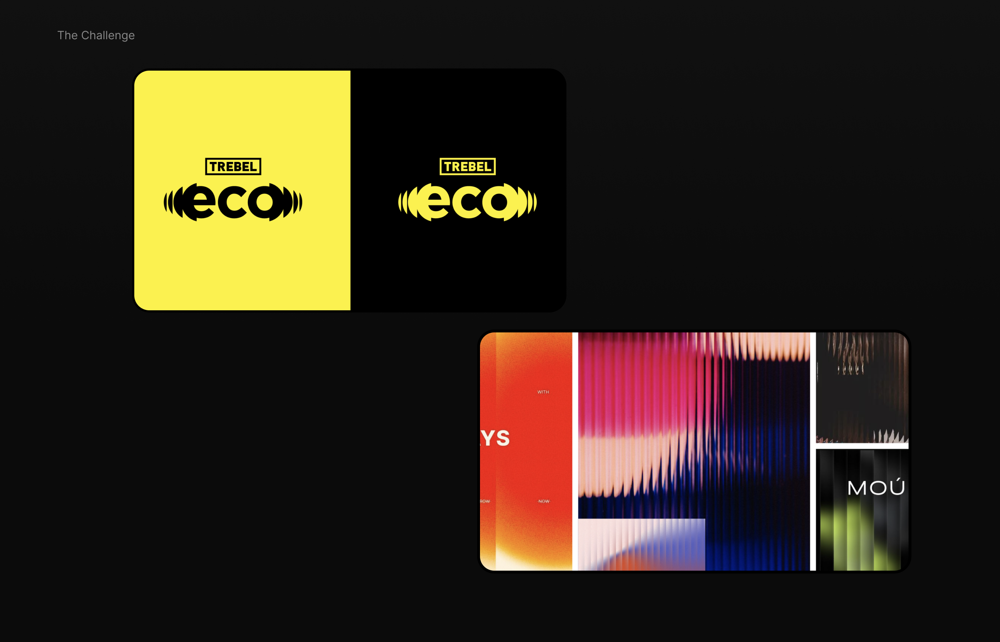
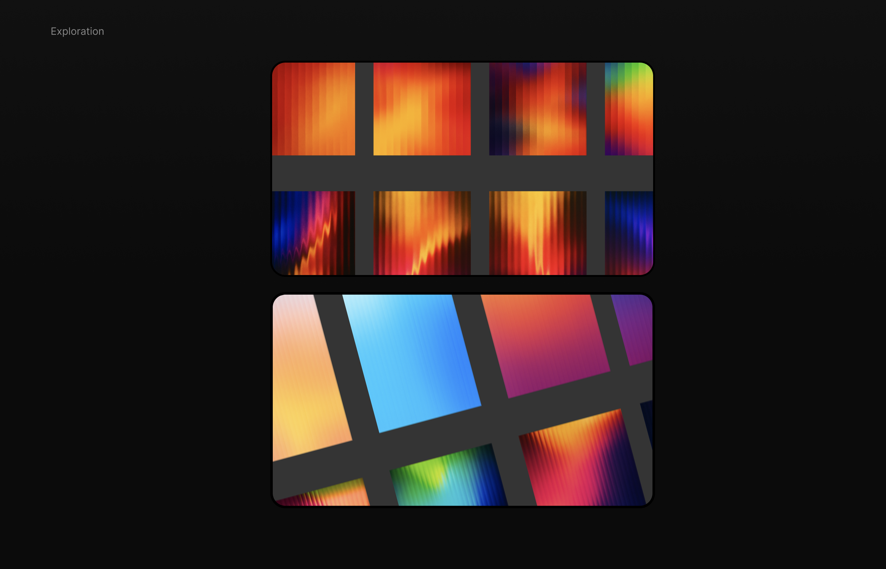
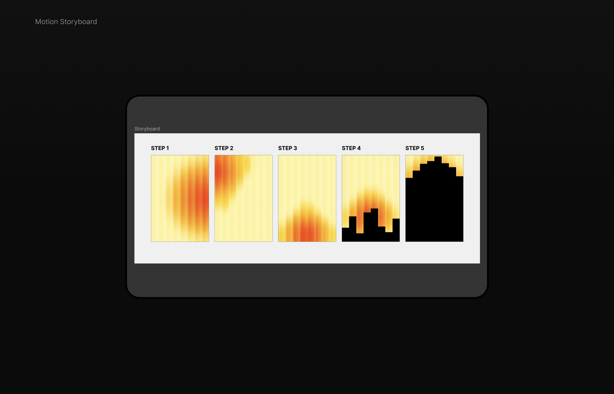
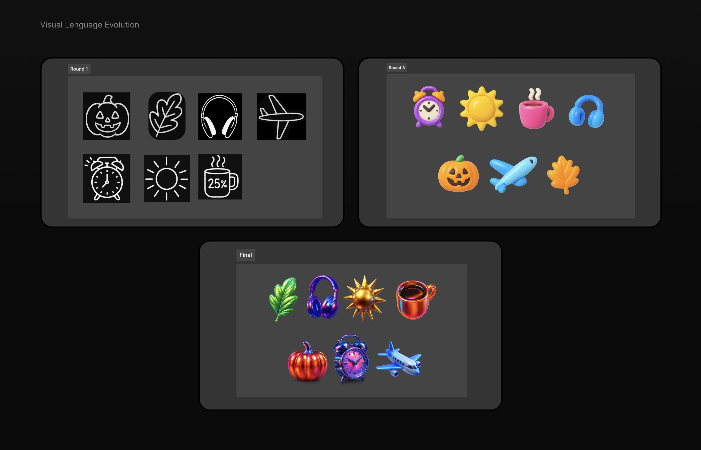
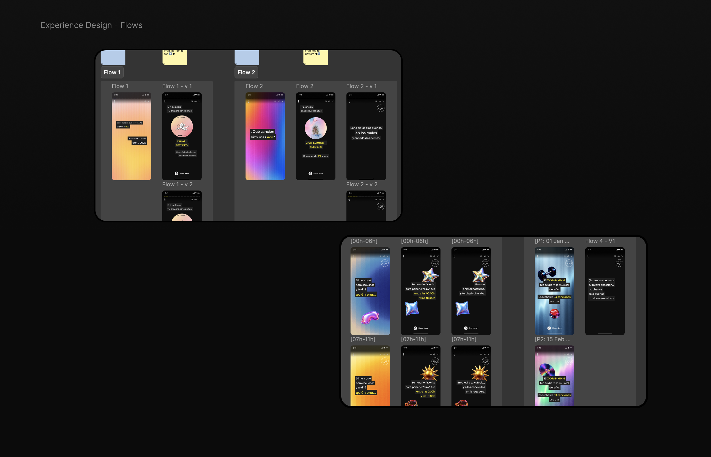
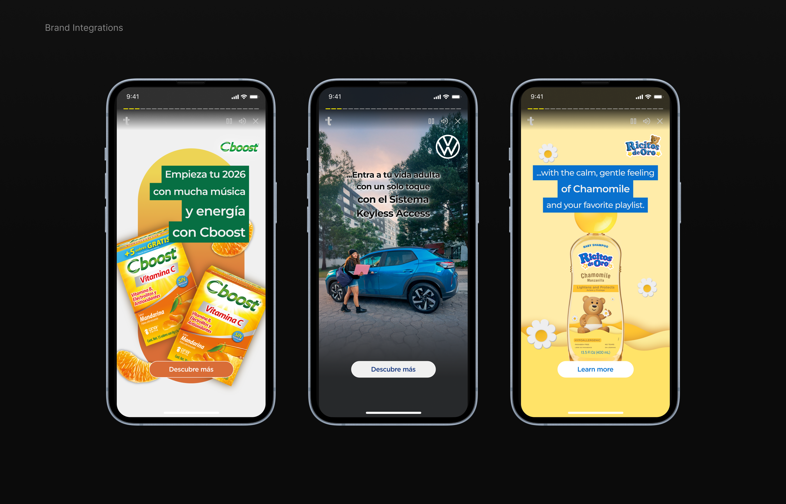
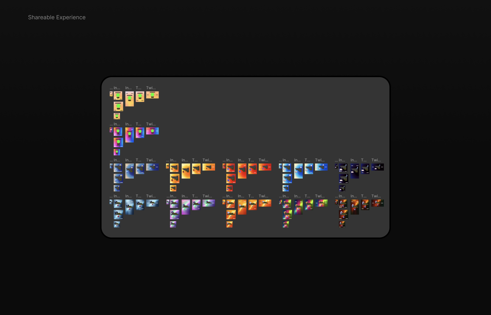
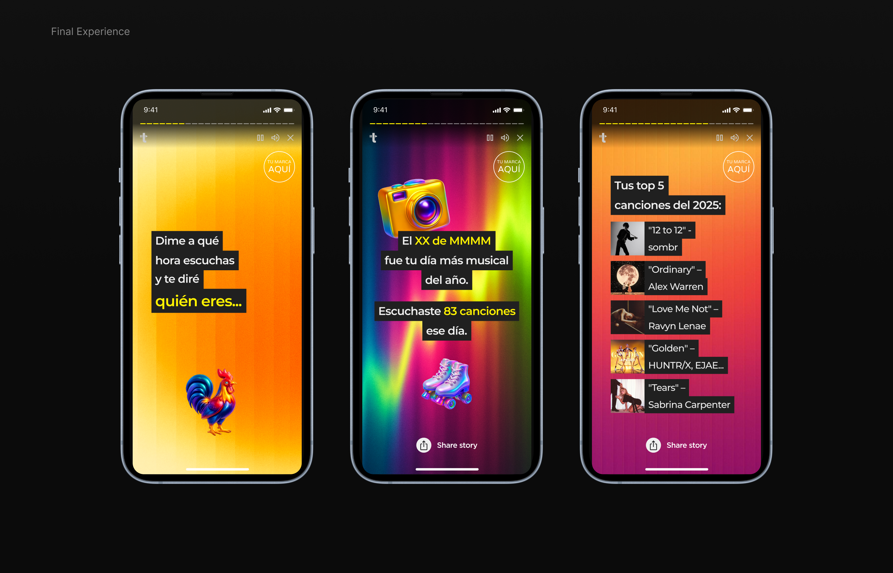

ECHO · TREBEL ECO
Designing a scalable, immersive storytelling experience for millions of users.
TREBEL ECO is a "Year in Review" feature designed to transform users' listening data into a dynamic, story-driven mobile experience.
The goal was to create a personalized narrative that felt engaging, visually rich, and easy to share, while working within real product and development constraints.
This project was developed collaboratively across Brand, Product, and Engineering.
The starting point was not a fully defined product, but a conceptual direction based on moodboards and narrative ideas.
The challenge was to transform this into a real experience while balancing:

The core concept was based on the idea of an "echo" — representing how users' listening habits resonate throughout the year.
This translated into a visual system inspired by:
The intention was to create a fluid, immersive experience rather than a static sequence of screens.
To support scalability, I developed a flexible background system. AI-assisted exploration was used to:

Motion was a key part of the experience, reinforcing the idea of "echo" through subtle, continuous movement. To communicate this clearly, I created:

iOS → partial motion implementation
Android → static fallback
Additional visual elements were developed to support storytelling across flows. The system evolved from:
Simple line icons → to expressive, colorful 3D elements

The experience was structured as a sequence of 12 narrative flows, each representing a key moment in the user's year. These flows needed to:

During development, external brands were integrated into the experience. This required:

Custom shareable formats were initially designed for different flows and platforms. Due to technical constraints, the final implementation relied on native screen sharing.
This reinforced the importance of designing screens that are inherently shareable.

The final result is a cohesive, visually rich experience that transforms user data into a narrative journey.

As the project evolved, several adjustments were necessary:
Designing with flexibility was key to maintaining quality under these constraints.
TREBEL ECO launched in December 2025 as a fully functional Year in Review experience. The final product successfully:
Replace VIDEO_ID_HERE in the source code with your YouTube video ID.
Designing for scale requires systems, not screens
Motion should support clarity, not compete with content
Personalized storytelling needs flexible visual rules
Constraints are part of the design process, not blockers